Garten- und Landschaftsbau in Altomünster
Michael Brandmeier baut Terrassen, Wege und Einfahrten, setzt Zäune und Mauern und macht Bagger- und Erdarbeiten mit dem eigenen Minibagger. Wenn alles steht, pflegt er auf Wunsch auch den Garten.
Angekreuzte Punkte stehen automatisch in Ihrer Nachricht. Projekte ansehen
Ihr Partner rund ums Haus.
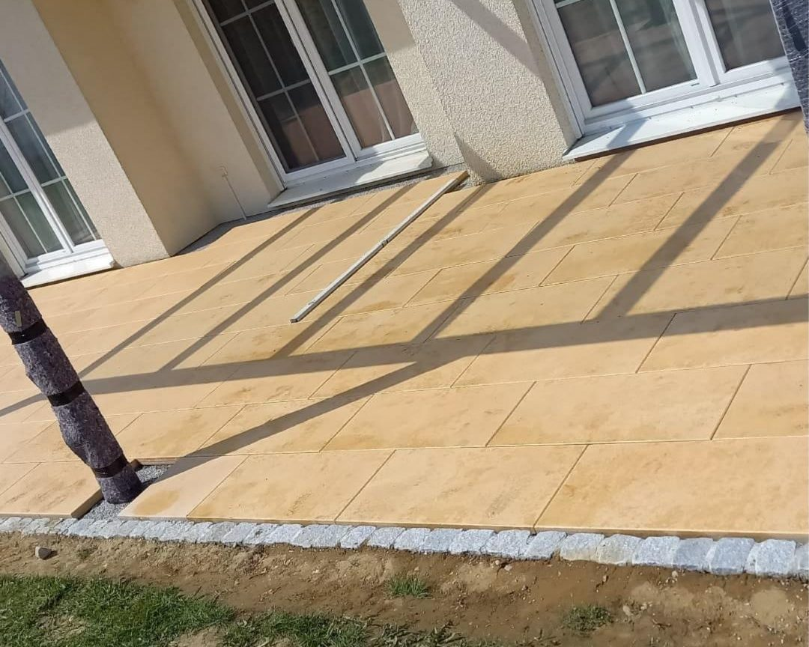
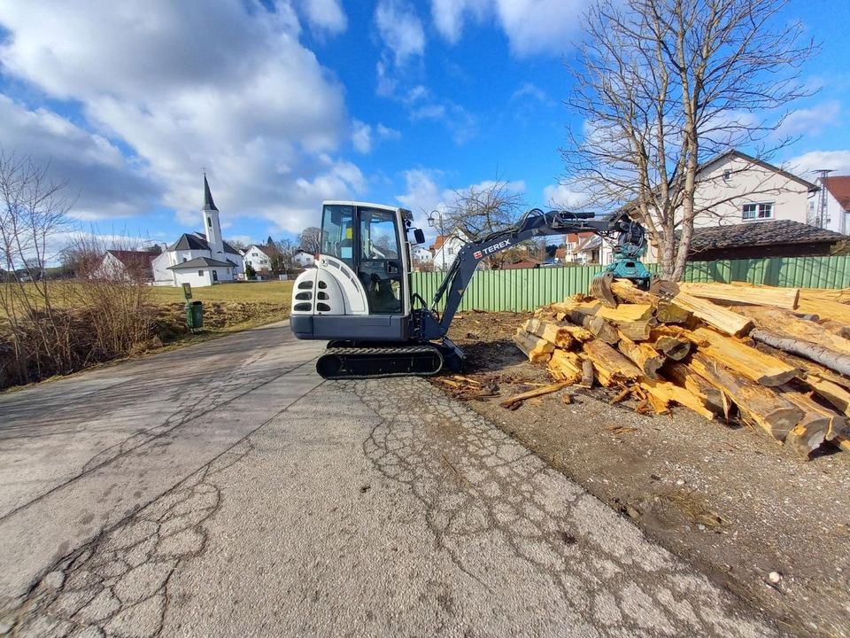
Leistungen für Garten, Terrasse und Einfahrt
Gartenbau Brandmeier übernimmt die Arbeiten rund ums Haus, vom Aushub über den Unterbau bis zum fertigen Belag.
Terrassen, Wege und Pflaster
Terrassen aus Naturstein oder Feinsteinzeug, Wege, Einfahrten und Stellplätze. Dazu Randsteine, Zierkies und Trittplatten.
Fugenversiegelung mit Epoxidharz
NeuFeste Fugen für Pflaster und Platten. Darin wächst kaum noch Unkraut, und der Regen spült nichts heraus. Mehr zur Fugenversiegelung
Bagger- und Erdarbeiten
Aushub, Unterbau und Erdarbeiten mit dem eigenen Minibagger.
Mauern und Zäune
Gartenmauern, Pfeiler und Holzzäune, auch als Holzzaun auf einem Mauersockel.
Rasen und Rollrasen
Rasenbau mit Bodenvorbereitung oder Rollrasen.
Garten- und Landschaftspflege
Heckenschnitt und Gartenpflege, einmalig oder regelmäßig.
Beratung und Planung
Was auf Ihre Fläche passt, besprechen Sie mit Michael Brandmeier vor Ort.
Pflasterfugen mit Epoxidharz versiegeln
In Sandfugen wächst nach ein paar Monaten wieder Unkraut, und starker Regen spült den Sand heraus. Fugenmörtel auf Epoxidharz-Basis härtet aus und bleibt fest in der Fuge.
Gartenbau Brandmeier verfugt neue Flächen damit und prüft bei bestehenden Terrassen, Wegen und Einfahrten, ob sie sich nachträglich versiegeln lassen.
- Ein tragfähiger Unterbau, damit sich später nichts setzt.
- Fugen, die breit und tief genug für den Mörtel sind.
- Trockenes Wetter beim Verfugen und danach einige Tage Ruhe für die Fläche.
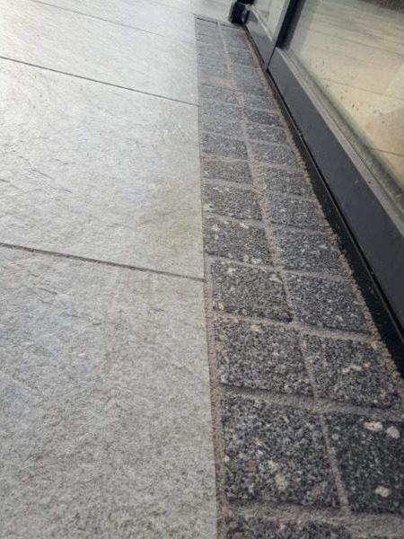
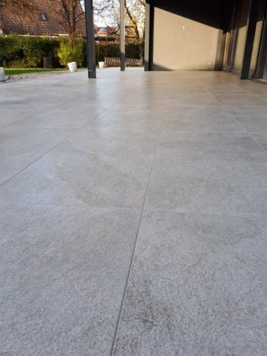
So läuft ein Auftrag
Anruf oder Nachricht
Rufen Sie an oder schreiben Sie per WhatsApp, gern mit ein paar Fotos der Fläche.
Termin vor Ort
Michael Brandmeier sieht sich Fläche und Untergrund an und bespricht mit Ihnen, was möglich ist.
Angebot
Sie bekommen ein Angebot für die besprochenen Arbeiten.
Bau
Zum vereinbarten Termin wird gebaut.
Projekte
Ein Einblick in Arbeiten von Gartenbau Brandmeier: Terrassen, Wege, Zäune und Pflege.
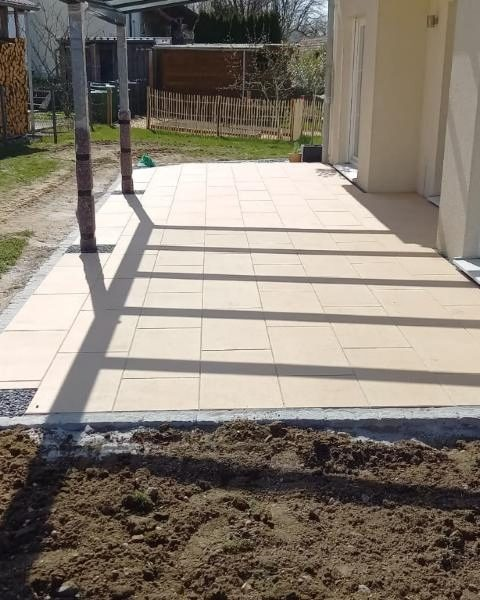
Sandsteinplatten unter der Pergola 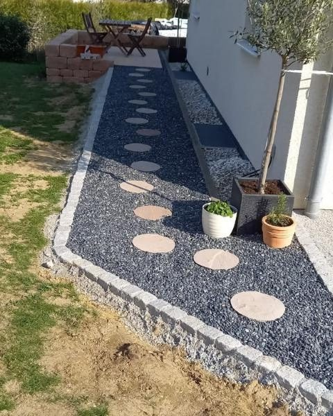
Trittplatten in schwarzem Zierkies 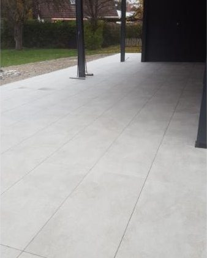
Überdachte Terrasse aus Feinsteinzeug 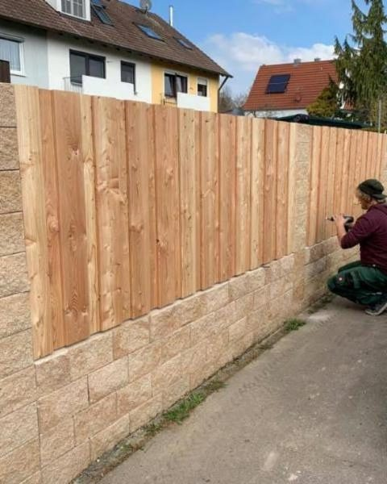
Holzzaun auf Mauersockel 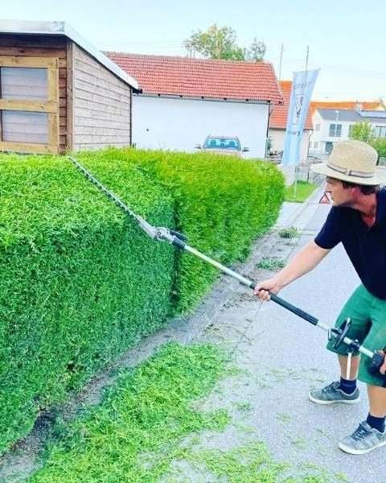
Heckenschnitt mit dem Teleskop-Heckenschneider 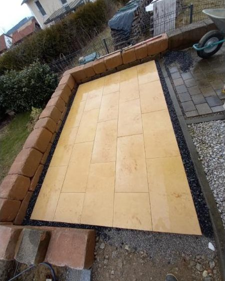
Sandsteinterrasse mit Blockstein-Einfassung 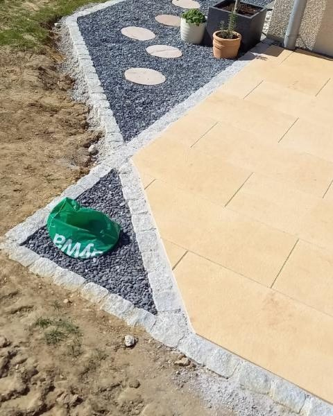
Terrassenecke mit Granit-Randstein und Zierkies 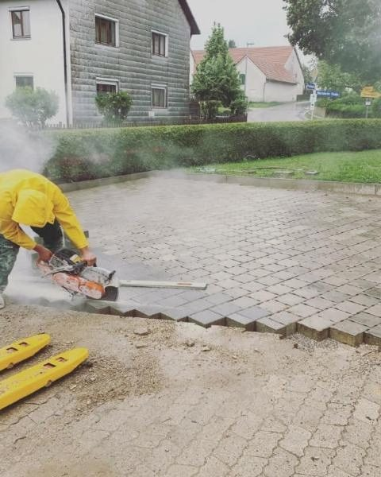
Pflastersteine zuschneiden 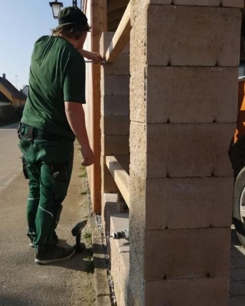
Mauerpfeiler aus Betonsteinen
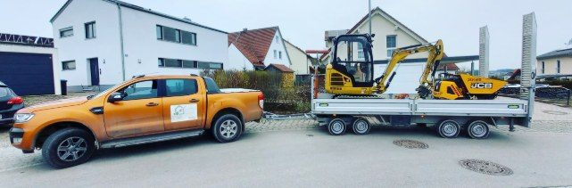
Michael Brandmeier aus Oberzeitlbach
Gartenbau Brandmeier ist der Betrieb von Michael Brandmeier in Oberzeitlbach bei Altomünster. Auf den Baustellen arbeitet er selbst mit, von der Planung bis zum letzten Randstein.
Gearbeitet wird in Altomünster und im Landkreis Dachau. Zum Betrieb gehören ein Minibagger und ein Zugfahrzeug mit Anhänger, damit Material und Maschine selbst auf die Baustelle kommen.
- Inhaber
- Michael Brandmeier
- Betrieb
- Oberzeitlbach bei Altomünster
- Einsatzgebiet
- Altomünster und Landkreis Dachau
- Maschinen
- Minibagger, Zugfahrzeug mit Anhänger
- Ausgeführt von
- Michael Brandmeier, Gartenbau Brandmeier
Bewertungen auf Google
Was Kunden über Gartenbau Brandmeier schreiben, steht im Google-Unternehmensprofil.
Beim Laden der Bewertungen wird eine Verbindung zu Google hergestellt und Ihre IP-Adresse übertragen. Mehr dazu in der Datenschutzerklärung.
Häufige Fragen
Lassen sich bestehende Pflasterflächen nachträglich versiegeln?
Oft ja. Die alten Fugen werden ausgeräumt und gereinigt, dann kommt der neue Fugenmörtel hinein. Ob es bei Ihrer Fläche geht, hängt vom Unterbau und von der Breite der Fugen ab. Das sieht Michael Brandmeier sich vor Ort an.
Wann kann man nach dem Verfugen wieder auf die Fläche?
Das hängt vom Fugenmörtel und vom Wetter ab. Begehbar ist eine Fläche meist nach etwa einem Tag, befahrbar erst nach mehreren Tagen. Den genauen Zeitpunkt erfahren Sie, wenn die Fläche fertig ist.
Was kostet eine neue Terrasse?
Das hängt von Größe, Material und Unterbau ab. Nach dem Termin vor Ort bekommen Sie ein Angebot für Ihre Fläche.
Kann ich vorab Fotos schicken?
Ja, am einfachsten per WhatsApp an 0157 73604385 oder per E-Mail an info@gartenbaubrandmeier.de. Mit Fotos lässt sich besser einschätzen, was ansteht.
In welchen Orten arbeitet Gartenbau Brandmeier?
In Altomünster und im Landkreis Dachau. Wenn Ihr Grundstück woanders liegt, fragen Sie einfach nach.
Was haben Sie vor?
Am schnellsten geht es per Telefon oder WhatsApp. Fotos der Fläche helfen bei der Einschätzung.
- Mobil und WhatsApp
- 0157 73604385
- Telefon
- 08254 9203713
- Adresse
- Oberndorfer Straße 1
85250 Altomünster-Oberzeitlbach
In Google Maps öffnen